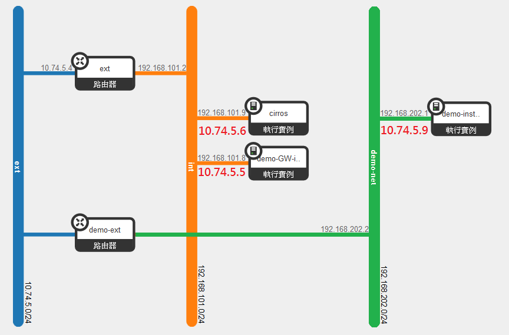

4ipstack
Openstack @ our company
What is Openstack ?
整合分散的硬體資源
+
有效的分配
的平台
- 網路
- CPU
- 記憶體
- 儲存空間
網路資源管理
- Neutron Network
- Nova Network
運算資源管理
- Nova
儲存資源管理
- Cinder
- Swift
Openstack 核心服務
- Keystone
- Glance
- MySQL
- RabbitMQ
- NTP
其它服務
- Horizon
- Ceilometer
- Heat
安裝與設置 (簡易版)
Databases
-- Create a database
CREATE DATABASE nova;
-- Assign a full permission for user "nova" under database "nova"
GRANT ALL PRIVILEGES ON nova.* TO 'nova'@'localhost' IDENTIFIED BY 'NOVA_PASS';
GRANT ALL PRIVILEGES ON nova.* TO 'nova'@'%' IDENTIFIED BY 'NOVA_PASS';
安裝套件
apt-get install nova-api\
nova-cert\
nova-conductor\
nova-consoleauth\
nova-novncproxy\
nova-scheduler\
python-novaclient修改設定檔
- 指定 Databases
- 指定 RabbitMQ
- Keystone Auth 資訊
註冊服務
$ keystone user-create --name nova --pass NOVA_PASS
$ keystone user-role-add --user nova --tenant service --role admin
$ keystone service-create --name nova --type compute --description "OpenStack Compute"
$ keystone endpoint-create \
--service-id $(keystone service-list | awk '/ compute / {print $2}') \
--publicurl http://controller:8774/v2/%\(tenant_id\)s \
--internalurl http://controller:8774/v2/%\(tenant_id\)s \
--adminurl http://controller:8774/v2/%\(tenant_id\)s \
--region regionOne
就降~超簡單~~~

原本應該是這樣子的....

第一個故事...
兩個 Router 會打架

兩個 Subnet，一個 External
理想上
實際上

封包在 FORWARD 和 POSTROUTING 之間蒸發了
第二個故事...
L3-agent 假裝自己有在做事...

Daemon 有跑起來...

Controller Node 找不到 l3-agent
元兇是...
debug = INFOController 看不到的 AGENT 就無法提供服務
Controller 看不到的 AGENT 就無法提供服務
Controller 看不到的 AGENT 就無法提供服務
很重要所以講三次 XD
Configure 設錯，不一定會報錯，也不一定會有 LOG...
Configure 設錯，不一定會報錯，也不一定會有 LOG...
Configure 設錯，不一定會報錯，也不一定會有 LOG...
也很重要所以講三次 XD
第三個故事...
Provider Network
不能直接拿來用
neutron net-list | grep extnova boot --flavor m1.tiny --image cirros-0.3.3-x86_64 \
--nic net-id=ba42bb7b-048b-4516-9148-1ddb28614975 \
cirros
可是他還是拿得到 IP...
附帶一提
No valid host was found. 通常發生在系統資源不足的時候
第四個故事...
cannot ping via floating ip
Security Group !!
Currently...
- OUT IPv4 0.0.0.0/0
- IN ICMP 0.0.0.0/0
- IN Port:22 0.0.0.0/0
- IN Port:80 0.0.0.0/0
第五個故事...
cannot ssh via floating ip
GRE Tunnel v.s MTU
ifconfig INSTANCE_INTERFACE mtu 1436or
TCP MSS
+-----------------------------------+
+----+ Switch (10.71.0.0/16) |
| +--+ (MGMT NETWORK) +---+
| | +-----+----------------------+------+ |
| | | | |
| | +-----+------+ +------+-------+ | +----------------+
| | | Controller | | Network +-------+ WAN |
| | +------------+ +----+----+----+ | | (10.74.5.0/24) |
| | | | | +----------------+
| | +-------------------+ | |
| | | (NEUTRON NETWORK) | |
| | +------+------+ +---------+----+ |
| +--+ ComputeA | | Compute4 +--+
| +------+------+ +-------+------+
| | (STORAGE NETWORK) |
| +------+----------------------+------+
+----+ Storage |
+------------------------------------+
Openstack 內部的通訊都走 Mgmt Network
資料流都走 Neutron Network
Storage Network 目前放空中 XD
Controller Node
- MySQL
- RabbitMQ Server
- KeyStone
- Glance
- Horizon
- *-scheduler
- *-api
Compute Node
Compute4
| Interface | Network | IP |
|---|---|---|
| em1 | mgmt | 10.71.231.4 |
| eth1 | neutron | 172.16.231.4 |
| em2 | storage | x |
陣亡中
- Nova
Network Node
- Neutron
10.74.5.1~10.74.5.100 for Floating IP
Virtual Router 也會佔用 IP
Storage Node
- Cinder
1TB for Instance
登入帳密
SSH:
ACCT/PWD
WebUI:
ACCT/PWD
實際操作一次
.jpg)
確認可以使用的資源
硬體模板列表
nova flavor-list安全組列表
nova secgroup-list映象檔列表
glance image-list網路資源列表
neutron net-list產生一個實例
nova boot \
--flavor FLAVOR_ID \
--image IMAGE_ID \
--nic net-id=SUBNET_ID \
--security-group SECGROUP_ID \
INSTANCE_NAME
或者是...
nova boot \
--flavor FLAVOR_NAME \
--image IMAGE_NAME \
--nic net-id=INT_NET_ID \
--security-group SECGROUP_NAME \
INSTANCE_NAME綁定 Floating IP
產生一個新的 Floating IP
neutron floatingip-create EXT_NET_ID附加 IP 到實例上
nova floating-ip-associate INSTANCE_ID FLOATING_IP外掛虛擬硬碟
產生虛擬硬碟
cinder create --display-name VOLUME_NAME VOLUME_SIZE(GB)掛載硬碟到實例上
nova volume-attach INSTANCE_ID VOLUME_ID格式化磁區
sudo fdisksudo mkfs.ext4 DEV_FILE最後檢驗一下
nova list
nova volume-list大功告成！
nova get-vnc-console INSTANCE_ID novnc最後分享幾個小技巧
- ip netns
- ip netns exec VIRTUAL_DEVICE bash
- nova --help
- neutron --help
其實指令用猜的比較快 lol
+- -+
+- -+ | secgroup | +- -+
| nova | | volume | | list |
| | + ' ' + | floating-ip | + '-' + | create |
| neutron | | image | | delete |
+- -+ | flavor | +- -+
+- -+
自動補齊也是猜指令的好碰友 :)
sudo nova-manage service list 2>/dev/null
sudo neutron agent-list
就算用 CLI 也要過 Keystone
source /home/admins/admin-openrc.sh
source /home/admins/demo-openrc.sh謝謝大家